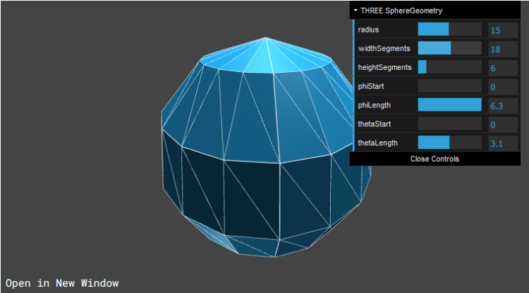
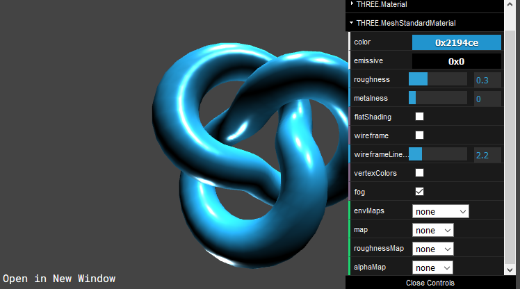
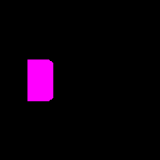

Pour le moment, la caméra n'a rien à filmer puisque la scène est vide. Dans cette partie, nous allons voir comment créer des objets 3D et les ajouter à la scène, ainsi que la gestion de l'éclairage.
La librairie three.js dispose de nombreuses formes tridimensionnelles basiques : des cubes (BoxGeometry), des cylindres (CylinderGeometry), des sphères (SphereGeometry), des cônes (ConeGeometry)...
Tous ces éléments sont des objets de type Geometry, qui représentent un ensemble de points dans l'espace. Ces points seront ensuite reliés entre eux pour créer les faces de l'objet final.
Pour créer un objet en forme de boîte, il faut instancier une BoxGeometry. Par défaut, la forme est un cube de taille 1, mais le constructeur permet de définir sa largeur, sa hauteur et sa profondeur :
See the Pen Untitled by OpenSpirit (@OpenSpirit) on CodePen.
Pour créer une sphère, il faut instancier une SphereGeometry, qui prend un minimum de trois paramètres : le rayon de la sphère et le nombre de segments horizontaux et verticaux. Plus le nombre de segments est élevé, plus il y aura de triangles composant la sphère, ce qui aura pour effet de lui donner une forme plus arrondie. Attention cependant, un nombre trop élevé de triangles à rendre peut nuire aux performances de la scène.
See the Pen Untitled by OpenSpirit (@OpenSpirit) on CodePen.
La partie « Geometry » de la documentation, dans le menu de gauche, recense toutes les géométries utilisables. La page de chaque géométrie permet de retrouver les paramètres de son constructeur et dispose également d'une démonstration interactive permettant de modifier en direct chaque paramètre pour visualiser son rendu.
Un ensemble de points n'est pas suffisant pour créer un objet 3D. En effet, un renderer a besoin de savoir à quoi doivent ressembler les faces de l'objet : leur couleur, mais aussi leur texture, la réaction qu'ils ont lorsque la lumière les frappe (réflexion et réfraction), etc. Toutes ces informations sont contenues dans un objet de type Material, qu'il faut appliquer à l'objet.
Three.js possède plusieurs Material de base, comme le MeshBasicMaterial, qui n'est pas affecté par la lumière ; le MeshStandardMaterial, qui permet de créer des objets plus réalistes et affectés par la lumière ; ou le MeshToonMaterial, qui permet de donner un effet « cartoon », avec des ombres ayant un nombre limité de graduations.
Pour créer un Material, il suffit d'instancier la classe correspondante. Le constructeur de chaque Material peut recevoir un objet permettant de le configurer. Les propriétés dépendent du type de Material créé.
Pour créer un MeshStandardMaterial, il faut utiliser le code suivant :
See the Pen Untitled by OpenSpirit (@OpenSpirit) on CodePen.
Il est possible de renseigner certains paramètres, comme la rugosité, qui permet d'avoir des objets plus ou moins réfléchissants :
See the Pen Untitled by OpenSpirit (@OpenSpirit) on CodePen.
Comme pour les Geometry, la partie Material présente tous les matériaux possibles, avec une démonstration interactive permettant de mieux comprendre l'effet des différents paramètres :
Un ensemble de Geometry et de Material est appelé Mesh. Ainsi, pour appliquer un matériau à un ensemble de points, il va falloir créer un objet Mesh dont le constructeur va prendre ces deux éléments en paramètres.
Le Mesh est l'élément qui sera ajouté à la scène en dernier, grâce à la méthode add de l'objet Scene. Les objets doivent être ajoutés à la scène avant le rendu de l'image finale, sans quoi ils n'y apparaîtront pas.
Par défaut, le Mesh est ajouté à la position (0, 0, 0), mais il est possible de modifier son emplacement grâce à sa propriété position. La méthode set permet de définir de nouvelles coordonnées, mais il est également possible de modifier indépendamment les propriétés x, y et z.
Le code suivant permet de créer une boîte de 1x2x1, de lui appliquer un matériau basique qui n'est pas affecté par la lumière, de créer un Mesh à la position (-2, 0, -3) et de l'ajouter à la scène :
See the Pen Untitled by OpenSpirit (@OpenSpirit) on CodePen.
Il est également possible d'ajouter un Mesh à l’intérieur d'un autre en utilisant la méthode add. Dans ce cas, seul l'élément parent devra être ajouté à la scène et tous les sous-objets seront déplacés en même temps que l'objet parent. Cela permet de créer des structures complexes, composées de plusieurs formes, et de pouvoir les manipuler facilement.
À noter que, dans tous les cas, la position d'un objet dépend de son parent : la position des objets ajoutés à la scène se fait par rapport à l'origine de la scène, tandis que les sous-objets sont placés par rapport à leur objet parent.
Ajoutons un cône au-dessus de la boîte :
See the Pen Untitled by OpenSpirit (@OpenSpirit) on CodePen.
Jusqu’à présent, seul le MeshBasicMaterial a été utilisé dans les exemples : les autres n'afficheront qu'un écran noir. Cela s'explique par le fait qu'il n'y a aucune source de lumière sur la scène : elle est plongée dans l'obscurité et l'utilisation d'un matériau qui réagit à la lumière ferait disparaître l'objet 3D.
Three.js possède plusieurs types de lumières à ajouter à la scène, comme AmbientLight, qui éclaire tous les objets de la scène de manière égale ; SpotLight, qui simule un projecteur ; ou PointLight, qui diffuse de la lumière dans toutes les directions à partir d'un point, comme un soleil ou une ampoule. Chaque lumière doit être ajoutée à la scène avec add.
Il est également possible de définir la couleur du fond (par défaut, noir) grâce à la méthode setClearColor du renderer.
Reprenons l'exemple suivant en utilisant le MeshStandardMaterial, pour un rendu plus réaliste. Pour cela, il faut également ajouter une source de lumière, comme une PointLight : son constructeur prend en paramètre une couleur (ici, blanc), une intensité et une distance limite d'effet. Par souci de visibilité, la couleur est également changée pour un gris clair :
See the Pen Untitled by OpenSpirit (@OpenSpirit) on CodePen.